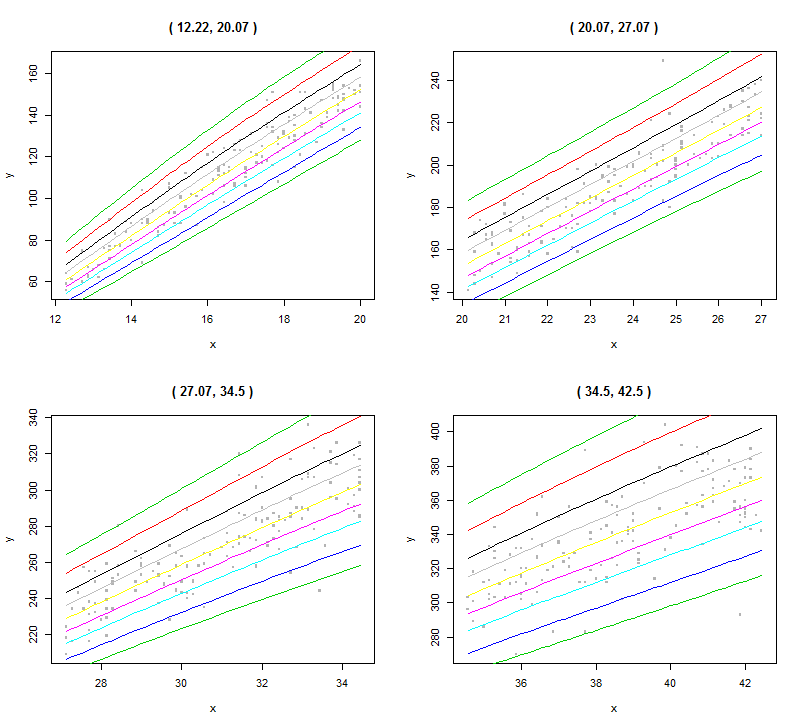

（Warning，本文章的实现部分尚未使用当前项目中的任意数据，数据均来自于软件自带。如有雷同，不是巧合。）
总的来说，写这篇文章的心态比较忐忑不安，毕竟，除了看了一遍原版手册外，关于这个算法的原理和历史知之甚少，于是，作为一个有良心的人，我的挣扎是还没完全吃透就写真的大丈夫吗？
但毕竟已经开始写了，也不能随便就半途而废。所以各位看官也就将就着看一看，有兴趣可以继续深入滴研究下去。
WHO
WHO，世界卫生组织的英文简称。提到它就是因为GAMLSS已经成为WHO官方指定的计算生长曲线的方法了，真的没有骗人，百度搜得到的。
为什么先说这个呢，是为了用WHO提升这算法的身价？那么我只能告诉你，就是这样的。
当然还有另一点，不知道还有多少小伙伴记得某期关于某区的体重数据的数据分析，用到的就是这个方法的前身——LMS（现已加入GAMLSS豪华大家庭）。如下图。
图1 男生BMI百分位生长曲线 图2 女生BMI百分位生长曲线当时，花了一定的时间找方法，然后读了几篇文章，就下载了一个名叫LMSchartmaker的软件，尝试着对学生的BMI生长曲线进行研究和建模，最后也产出了一定的结果。
但是，始终让我耿耿于怀的有几点：
- 这方法的合理性
- 里面有几个参数实际上调整的时候心里没底
- 这个软件是个测试版，更多功能只有下载pro版才能用，但是当时没找到破解版的
- 这方法还能解决的问题有哪些
后来，因为种种原因，对这个方法的研究并没有再深入下去。
时至今日，或许是一种名曰“猿粪”的东西使然，PCDP常模一直存在隐患，即没有消除不同年龄段下全体不同造成的差异。同时，新版PCDP业已上线，于是需要一套新的方法制定常模，那么我们再次找到了它，只是这时候它已改头换面，江湖人称-GAMLSS。
GAMLSS
说了辣么久，GAMLSS究竟是什么这个问题始终没有解决。其实，这是一个英文缩写，GAMLSS全称是Generalized Additive Models for Location, Scale and Shape，也就是考量了位置（均值）、比例（标准差）、形状（峰度和偏度）的广义加法模型们。这个模型来自于GLM( Generalized Linear Models，广义线性模型)和GAM（Generalized Additive Models，广义加法模型）的进一步优化和修正。
Generalized Additive Models for Location, Scale and Shape (GAMLSS) were introduced by Rigby and Stasinopoulos (2001, 2005) and Akantziliotou et al. (2002) as a way of overcoming some of the limitations associated with Generalized Linear Models (GLM) and Generalized Additive Models (GAM) (Nelder and Wedderburn, 1972 and Hastie and Tibshirani, 1990, respectively). In GAMLSS the exponential family distribution assumption for the response variable (y) is relaxed and replaced by a general distribution family, including highly skew and/or kurtotic distributions. The systematic part of the model is expanded to allow modelling not only the mean (or location) but other parameters of the distribution of y as linear parametric and/or additive non-parametric functions of explanatory variables and/or random effects. Maximum (penalised) likelihood estimation is used to fit the models.
There are two algorithms to fit the models, the CG and RS algorithms, which are discussed in detail in Rigby and Stasinopoulos (2005).
总体来说，这个模型的建立不再是只针对于均值的分布，而是也考虑了标准差、峰度、偏度等统计量的分布情况，
好吧，越说越抽象了，推导公式什么的干脆就不写了，有兴趣可以直接看原文。（关键是作者自己也没有看懂）
总结来说，GAMLSS听名字就很有（哔~）格，适合各种装（哔~）人士。不过，话说回来，这个模型本身确实是个很牛（哔~）的东西，能解决很多问题。不过，有一个大前提，搞懂这个算法。所以，还有很多需要学的...
R & GAMLSS
所以，以上所说的都不是重点，关键还是如何实现gamlss的算法，所以，我就很不要face的把人家的代码和例子抄过来了。
首先，我们统计计算的环境在R语言上，所以没有配置R语言的同学们，有三种选择：1.装一个玩玩；2.看看不说话；3.泡杯茶，点下右上角的叉叉，世界就清净了。
还是先做点贡献，简单翻译下gamlss这个表里面的一些函数和变量：
GAMLSS包的函数：
- 主要函数：
- gamlss()：模型拟合，建立gamlss模型对象
- refit()：模型重新拟合
- update()：模型升级
- histDist()：拟合某一变量的参数分布，并绘制直方图
- 从模型中提取信息的函数：（只贴了我觉得重要的，更多请看文档）
- AIC() GAIC()：Akaike信息准则（很多时候决定了最合适的模型）
- coef()：提取模型结果的线性拟合系数
- deviance()：全局差异量（和AIC同样是用来判断模型拟合优度的）
- fitted()：提取拟合值
- formula()：提取模型
- summary()：提取模型信息
- 用于选择模型的函数：（只贴了我觉得重要的，更多请看文档）
- addterm()：增加模型的相关属性（用于调整模型，和模型比较）
- dropterm()：减少模型的相关属性（用于调整模型，和模型比较）
- stepGAIC()：使用逐步的方法调整参数（用于调整模型，和模型比较）
- 用于作图和诊断的函数：（只贴了我觉得重要的，更多请看文档）
- plot()：四个图，用于诊断残差。分别是，1,对自变量，2,对拟合值，3,密度图，4,Q-Q图
- wp()：蠕虫图，诊断模型的拟合度
- 分位数估计的函数-适用于单自变量：（只贴了我觉得重要的，更多请看文档）
- centiles()：做分位数图
- centiles.split()：分段分位数图
是不是依然一头雾水？哈哈，那就对了。直接讲代码会更好，上面最多算开胃菜。
R Example
所以我们先来看看一个例子：
> library("gamlss") #调用包
载入需要的程辑包：splines
载入需要的程辑包：gamlss.data
载入需要的程辑包：gamlss.dist
载入需要的程辑包：MASS
载入需要的程辑包：nlme
载入需要的程辑包：parallel
********** GAMLSS Version 4.3-6 **********
For more on GAMLSS look at http://www.gamlss.org/
Type gamlssNews() to see new features/changes/bug fixes.
> data("abdom") #导入内置的数据
里面的数据大概长这样：
| y | x | |
|---|---|---|
| 1 | 59 | 12.29 |
| 2 | 64 | 12.29 |
| 3 | 56 | 12.29 |
| 4 | 61 | 12.43 |
| 5 | 74 | 12.71 |
| 6 | 60 | 12.71 |
| 7 | 75 | 12.71 |
| ... | ... | ... |
然后我们就可以开始建模了：
> abd0 <- gamlss(y~poly(x,3), data=abdom, family=NO) #建立GAMLSS模型，自变量选择三项式，因变量选择正态分布 GAMLSS-RS iteration 1: Global Deviance = 4939.735 GAMLSS-RS iteration 2: Global Deviance = 4939.735
模型进行了两次迭代就完成了拟合，我们可以用summary指令调出模型的结果
> summary(abd0) #查看模型详细信息
*******************************************************************
Family: c("NO", "Normal")
Call: gamlss(formula = y ~ poly(x, 3), family = NO, data = abdom)
Fitting method: RS()
-------------------------------------------------------------------
Mu link function: identity
Mu Coefficients:
Estimate Std. Error t value Pr(>|t|)
(Intercept) 226.7131 0.5617 403.586 < 2e-16 ***
poly(x, 3)1 2157.7220 13.8738 155.525 < 2e-16 ***
poly(x, 3)2 -109.5552 13.8741 -7.896 1.36e-14 ***
poly(x, 3)3 -26.6976 13.8741 -1.924 0.0548 .
---
Signif. codes: 0 ‘***’ 0.001 ‘**’ 0.01 ‘*’ 0.05 ‘.’ 0.1 ‘ ’ 1
-------------------------------------------------------------------
Sigma link function: log
Sigma Coefficients:
Estimate Std. Error t value Pr(>|t|)
(Intercept) 2.63002 0.02863 91.86 <2e-16 ***
---
Signif. codes: 0 ‘***’ 0.001 ‘**’ 0.01 ‘*’ 0.05 ‘.’ 0.1 ‘ ’ 1
-------------------------------------------------------------------
No. of observations in the fit: 610
Degrees of Freedom for the fit: 5
Residual Deg. of Freedom: 605
at cycle: 2
Global Deviance: 4939.735
AIC: 4949.735
SBC: 4971.802
*******************************************************************
里面我们可以得到一些信息，
比如，关于均值系数（mu）的估计，连接方式是identity（原始值，不做变化），并认为三项式是不显著的(p > 0.05)；
关于标准差（sigma）的估计，连接方式是采用了对数（log）转换，将其纳入模型是有意义的(p < 0.05);
最后三行是关于这个模型的误差大小。
使用多项式（poly）模型是线性的参数估计模型。考虑到年龄的特性，采用半参数模型，也就是非参数的平滑方法，三次样条（相关理论详见reference）。如下：
> abd1 <- gamlss(y~cs(x,df=3), data=abdom, family=NO) #建立GAMLSS模型，自变量选择三次样条，因变量选择正态分布 GAMLSS-RS iteration 1: Global Deviance = 4937.16 GAMLSS-RS iteration 2: Global Deviance = 4937.16
可以看到，使用三次样条的模型拟合结果要优于直接使用三项式拟合，表现为差异更小。那么，模型建立好之后，我们能做什么呢？首先就是预测，想查看已有的x相应的模型拟合值就可以使用predict()函数。如下:
> predict(abd1,what="mu",type="response")[1] #给出模型下，原始自变量x的相应估计值 [1] 62.80203
可以看到，第一个x值12.29拟合值y'为62.80203，其真值为59。再看其他x为12.29的值，其拟合值y'也均为62.80203。这方法同样适用于估计未知的x值。
我们说过，GAMLSS是一个能够估计模型中任意参数的统计模型，上文主要是对x进行了平滑处理，主要影响的是平均值（mu）。而实际上，标准差（sigma）同样可以进行平滑处理。
同样，对标准差也考虑三次样条平滑，如下：
> abd2 <- gamlss(y~cs(x,3), sigma.formula=~cs(x,3), data=abdom, family=NO) #建立GAMLSS模型，自变量选择三次样条，标准差也选择三次样条，因变量选择正态分布 GAMLSS-RS iteration 1: Global Deviance = 4785.698 GAMLSS-RS iteration 2: Global Deviance = 4784.711 GAMLSS-RS iteration 3: Global Deviance = 4784.718 GAMLSS-RS iteration 4: Global Deviance = 4784.718
可以看到，差异进一步减少，这个时候，我们可以使用图形诊断的方式：
> plot(abd2) #图形诊断
*******************************************************************
Summary of the Quantile Residuals
mean = 0.0005115742
variance = 1.001641
coef. of skewness = 0.2397172
coef. of kurtosis = 3.718456
Filliben correlation coefficient = 0.9962348
*******************************************************************
先看看模型的参数，拟合并标准化后，均值（mean）趋近于0，方差（variance）趋近于1，偏度（skewness）趋近于0.24，峰度（kurtosis）趋近于3.72。其中均值和方差都服从标准正态分布，但是偏度和峰度都存在问题，与没有对这两个变量进行拟合有关。具体可以看看下图。
图3 模型诊断图从左上图和右上图可以看到，残差没有特定规律，且集中在0线附近。但是左下和右下的图却表明整体拟合的分布情况并不是完全服从正态分布。另外，可以使用蠕虫图进一步验证：
> wp(abd2) #蠕虫图诊断 Warning message: In wp(abd2) : Some points are missed out increase the y limits using ylim.all
出现了警告信息，因为y轴的限制，部分点没有落在画布中，但是并不影响图形的呈现。
图4 模型蠕虫诊断图如果要涵盖所有点，只要在上面的代码中加入ylim.all=1.5即可，这里就不另行演示了。
当然，关于曲线连接还有各种方法，以及在因变量的分布选择上也有很多族群，方法大致是类似的，就不做进一步展示了。
另外，在多自变量的情况下，如何选择有效的自变量以及采用何种平滑方式等问题都在模型选择方面，因为相对比较庞杂，就不在这里详细介绍了。（其实是很多作者也没完全理解）
所以还是回到主题，我们这次主要讲单自变量（吐槽：好像之前完全没提过吧！），尤其是生长类的数据（吐槽：终于能理解为啥最上面放的图是那样的了...），对单自变量而言，制定年龄的生长曲线就很有必要了（吐槽：原来到这里才勉强和WHO挂钩...）那么就要用到分位数的系列函数了。
上文提到，abd2这个模型在偏度和峰度的拟合上有问题，那么我们就改变因变量族（NO-BCT，BCT就是早期LMS方法的一种进化）。
> abd3 <- gamlss(y~cs(x,3), sigma.formula=~cs(x,3), nu.formula=~1, tau.formula=~1, data=abdom, family=BCT) #建立GAMLSS模型，自变量选择三次样条，标准差也选择三次样条，峰度和偏度使用模型自身的拟合方式，因变量选择BCT分布 GAMLSS-RS iteration 1: Global Deviance = 4772.466 GAMLSS-RS iteration 2: Global Deviance = 4772.446 GAMLSS-RS iteration 3: Global Deviance = 4772.429 GAMLSS-RS iteration 4: Global Deviance = 4772.423 GAMLSS-RS iteration 5: Global Deviance = 4772.422 GAMLSS-RS iteration 6: Global Deviance = 4772.422
可以看到，Global Deviance进一步减少，具体有啥不同可以看看图形诊断：
> plot(abd3) #图形诊断
*******************************************************************
Summary of the Quantile Residuals
mean = 0.002168679
variance = 1.002097
coef. of skewness = -0.002431813
coef. of kurtosis = 2.997971
Filliben correlation coefficient = 0.999331
*******************************************************************
图5 BCT模型诊断图
可以看到，均值和方差的变化不大，但是偏度趋近于0，峰度趋近于3，表明这两个统计量在数据标准化后也更接近正态分布了。图像上也能看出相应的变化趋势。模型整体拟合基本完成，就可以开始做分位数图了：
> centiles(abd3,abdom$x) #做以x为横轴的分位数图 % of cases below 0.4 centile is 0.3278689 % of cases below 2 centile is 2.459016 % of cases below 10 centile is 8.688525 % of cases below 25 centile is 26.72131 % of cases below 50 centile is 50.32787 % of cases below 75 centile is 74.09836 % of cases below 90 centile is 90 % of cases below 98 centile is 98.19672 % of cases below 99.6 centile is 99.67213图6 BCT模型分位数图
是不是觉得一下子明朗了很多？开始有点像最上面写的东西了吧？然后，这个函数使用后，R还会给出相应的分位数下，原始数据的百分比，以% of cases below 0.4 centile is 0.3278689 为例，表示在0.4分位数下，共有0.33%的原始数据。（由于是模型拟合得出，所以相应的分位数线并不会和真值的百分比完全重合，否则会出现过拟合的现象）
如果需要更详细的看每一块的具体情况，也可以切割x，如下：
> centiles.split(abd3,abdom$x,n.inter=4,plot=TRUE) #等距切割x为4份
12.22 to 20.07 20.07 to 27.07 27.07 to 34.5 34.5 to 42.5
0.4 0.000000 0.000000 0.6410256 0.6802721
2 2.597403 1.307190 2.5641026 3.4013605
10 9.090909 7.189542 10.8974359 7.4829932
25 24.675325 32.679739 23.7179487 25.8503401
50 48.051948 53.594771 49.3589744 50.3401361
75 74.025974 73.202614 73.7179487 75.5102041
90 88.311688 92.156863 87.8205128 91.8367347
98 98.051948 99.346405 97.4358974 97.9591837
99.6 100.000000 99.346405 99.3589744 100.0000000

图7 BCT模型分位数切割图这样就能在不同区间下看数据的具体拟合情况了。
当然了，光作图肯定不行，我们需要常模，这时候就可以使用centiles.pred()函数了，如下：
> result <- centiles.pred(abd3, xname="x", xvalues=seq(12,40,2)) #确定x的取值范围（12-40之间的偶数），并显示其在这些x下的分位数值
new prediction
new prediction
> result #显示结果
x C0.4 C2 C10 C25 C50 C75 C90 C98 C99.6
1 12 44.32711 47.53253 51.34103 54.21895 57.45385 60.90705 64.39587 69.76055 75.10622
2 14 64.82613 69.10823 74.16075 77.95493 82.19680 86.69957 91.22366 98.13401 104.96790
3 16 85.80225 90.94381 96.96904 101.46597 106.46692 111.74629 117.02196 125.02794 132.88689
4 18 106.90558 112.65922 119.35572 124.32307 129.81801 135.58713 141.32114 149.96646 158.39085
5 20 127.75524 133.93174 141.07620 146.34662 152.14917 158.21131 164.20744 173.19566 181.89678
6 22 148.08123 154.60112 162.10604 167.61820 173.66415 179.95605 186.15569 195.40663 204.31583
7 24 168.12070 175.00560 182.90305 188.68542 195.01076 201.57518 208.02576 217.61986 226.82558
8 26 187.58929 194.98700 203.45806 209.65084 216.41620 223.42766 230.30828 240.52562 250.31158
9 28 206.01101 214.15918 223.49083 230.31356 237.76786 245.49414 253.07702 264.33857 275.12615
10 30 223.17620 232.26935 242.69734 250.33091 258.67978 267.34258 275.85358 288.50942 300.64992
11 32 239.35481 249.50734 261.17236 269.72599 279.09478 288.83051 298.40981 312.67942 326.39537
12 34 254.84080 266.03017 278.90827 288.36571 298.73790 309.53085 320.16440 336.02944 351.30618
13 36 269.69904 281.85541 295.86494 306.16547 317.47378 329.25320 340.87063 358.22502 374.95926
14 38 283.90700 296.99358 312.09257 323.20561 335.41677 348.14835 360.71622 379.51067 397.65568
15 40 298.22004 312.08715 328.09402 339.88011 352.83540 366.34775 379.69112 399.65385 418.93614
这样就可以得到目前模型中每个自变量x所对应的相应的分位数的值了。那么有什么用？有了这些数据，来了一个新数据就可以直接进行匹配了。有没有觉得目前PCDP的常模可以用这个方法来做？是的，所以在之后的一个版本的常模我们就会考虑用这个方法。
自此，这个模型的简单介绍就到这里了，实际上很多还是直接照搬了PDF里面的例子，不过用了一种可能在实际研究中会用到的最直接的方式表达了出来（至少作者是这么觉得的），从建模到调整再到出结果成模型为后续的使用准备。可能相对简单，如果需要进一步研究这个模型，那就要参考各种文章了，这里就不做理论上的解释了。
结束语：
这个模型就这么结束了吗？其实并没有，这篇文章只是一种抛砖引玉罢了。如果真的要理解GAMLSS这个模型，我们需要的基础还很多，一步步整理的话，我们要从一元线性模型到多元线性回归模型，到广义线性模型，到广义加法模型之后才能到GAMLSS这个整合性质的模型。
理论的复杂度决定了这个模型本身是经过不断磨砺成长的。但是从另一个角度来说，感谢R提供了这样的方法和环境，可能并不需要完全理解这个模型就能够使用，反过来，在做中学也是个不错的主意。
再总结一句（别嫌啰嗦），所谓统计模型，通常都是把复杂的曲线转换成直线，或者把复杂的运算简化到加法再加以实现的形式。那么，人类在做决策的时候是不是也可能用这样的思路把一个复杂的问题给简化呢？这个就留给大家自己思考了。
Reference
PDF：Package ‘gamlss’
PDF：Instructions on how to use the gamlss package in R
GAMLSS：Homepage
博客：三次样条